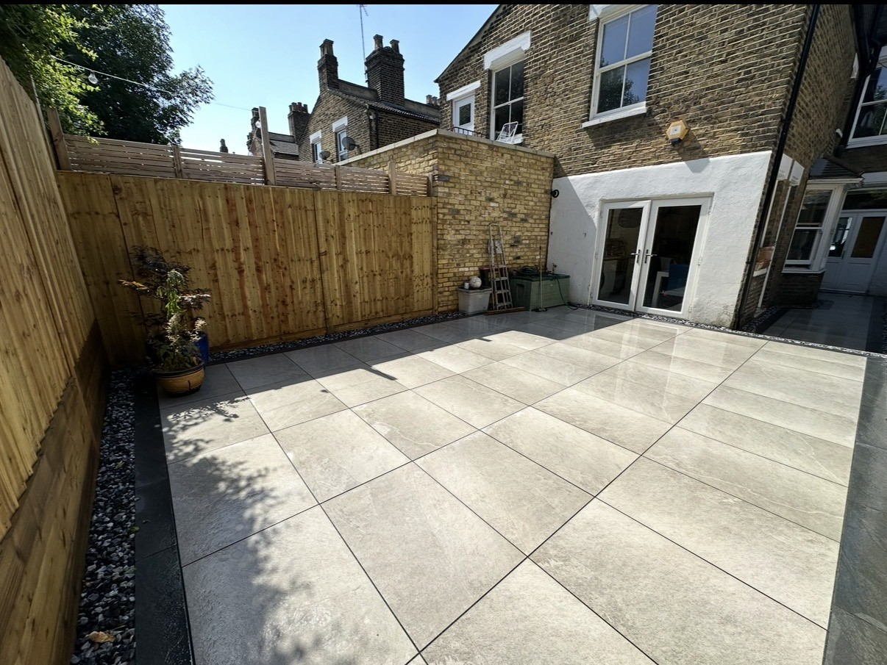
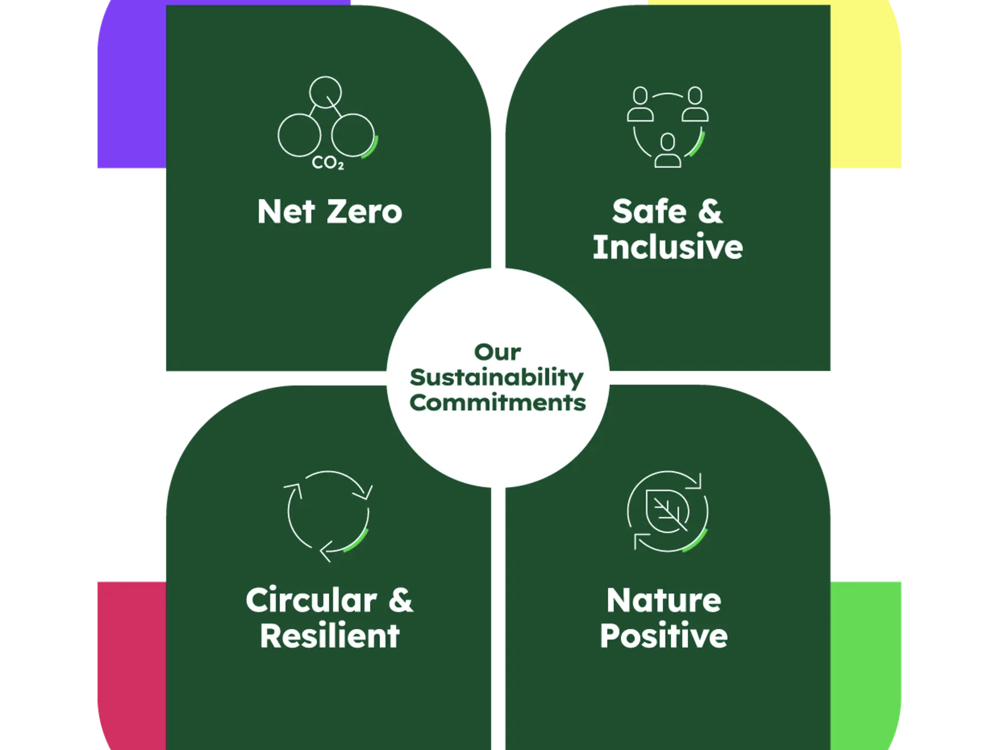

Operatives
Working exclusively for Applewood Monday to Friday across brickwork, groundworks and fencing.

Applewood Construction Kent Limited is a family-run construction company delivering fencing, groundworks and brickwork projects across the South East, combining practical expertise with reliable project delivery.
“We have worked with Applewood for several years and have consistently been impressed by the quality of their work, professionalism and reliability... We would have no hesitation in recommending them...”
Stephanie B Project Quantity SurveyorApplewood Construction is a family-run business covering all aspects of fencing, groundworks and brickwork.
The company carries out reactive repairs, minor works, disrepair works and major works projects for property maintenance companies, local authorities, housing providers and commercial organisations.
Applewood Fencing, our sister company, serves private clients in Kent from the fencing supply shop in Kingsnorth on a supply-and-fit basis, giving the wider group practical supply chain depth and local trade presence.
Applewood is set up with the people needed to inspect, price, plan, resource, deliver and close each job properly.
Working exclusively for Applewood Monday to Friday across brickwork, groundworks and fencing.
Sourcing materials and managing stock, inventory and preparation for site teams.
Managing enquiries, quotes, resident booking, invoicing and works in progress.
Carrying out inspections, post-inspections and random PPE and compliance spot checks.
The process is designed to give clients visibility and keep residents informed from works order through to completion photos and final report.
The job is issued by the client and reviewed by the Applewood office team.
Applewood books and carries out the first inspection within 3 working days where required.
The job is specified by a surveyor on site, with a report prepared and sent to the office.
The Applewood office sends the quotation and report to the client for approval.
Once approved, planners book the works directly with the resident.
Operatives receive the approved works report and required materials from Applewood’s stock yard.
A supervisor carries out post-inspection and sign-off of the completed works.
Applewood sends report, photos and completion details back to the client.
Applewood’s experience includes high-volume responsive works, estate programmes, direct local authority work and multi-trade project delivery.

Applewood buys sustainably sourced timber governed by UK Forestry Commission standards and uses aggregate suppliers that place sustainability at the core of their operations.